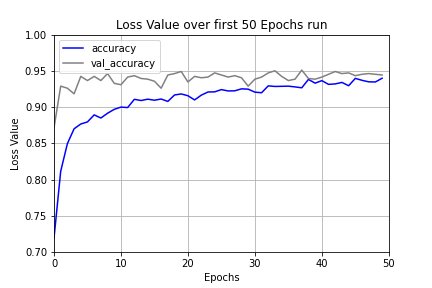
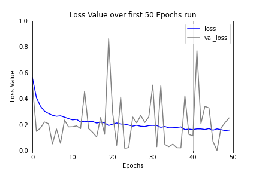

High Level Statistics
Dataset split between normal and opaque:

Stacked Barchart showing different datasets, and whether image shows normal or opaque lung
Sample images from dataset:

A small sample of chest x-rays in both children and adult
First 50 Epochs' Accuracy Values:
Line chart of model accuracy after 50 epochs
First 50 Epochs' Loss Values:
Line chart of model loss after 50 epochs
Confusion Matrix:

The confusion matrix of the test results
Flow chart of convolutional neural network utilized:

Flow chart of convolutional neural network used for training and testing